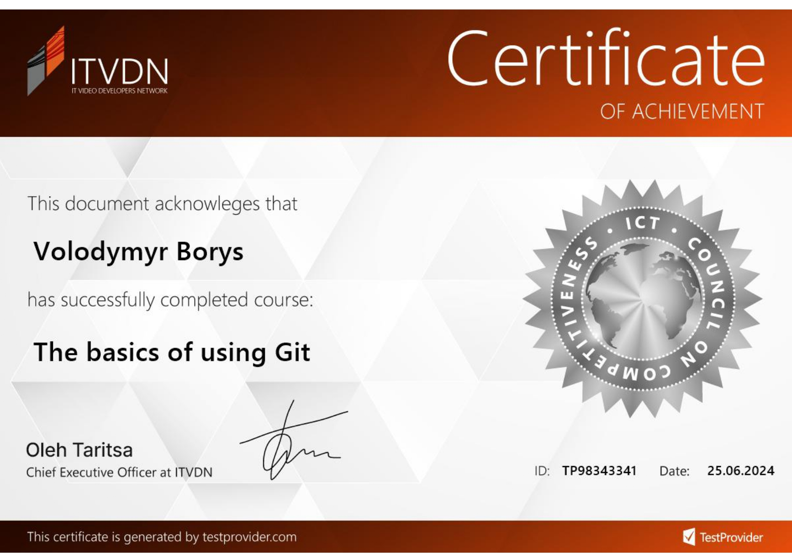

Навчальні модулі
Система контролю версій Git
Git - абсолютний лідер за популярністю серед сучасних систем управління версіями. Це розвинений проект з активною підтримкою та відкритим вихідним кодом. Система Git була спочатку розроблена в 2005 Лінусом Торвальдсом - творцем ядра операційної системи Linux. Git застосовується для управління версіями в рамках колосальної кількості проектів з розробки програмного забезпечення, як комерційних, так і з відкритим вихідним кодом. Система використовується безліччю професійних розробників програмного забезпечення. Вона чудово працює під управлінням різних операційних систем і може застосовуватися з безліччю вбудованих середовищ розробки (IDE).
Git – система управління версіями з розподіленою архітектурою. На відміну від колись популярних систем на кшталт CVS і Subversion (SVN), де повна історія версій проекту доступна лише в одному місці, у Git кожна робоча копія коду сама по собі є репозиторієм. Це дозволяє всім розробникам зберігати історію змін у повному обсязі.
(Джерело: https//www.atlassian.com/git/tutorials/what-is-git)Основні можливості:
- GIT дозволяє розробникам переглядати всю тимчасову шкалу змін, рішень та ходу виконання будь-якого проекту в одному місці. З моменту доступу до історії проекту розробник отримує всю необхідну інформацію, щоб розібратися в проекті та почати робити свій внесок.
- Розробники працюють у різних часових поясах. Завдяки розподіленій системі керування версіями, як-от GIT, спільну роботу можна вести у будь-який час, зберігаючи цілісність вихідного коду. За допомогою гілок розробники можуть безпечно пропонувати зміни для робочого коду
- Організації, що використовують GIT, можуть усунути комунікаційні бар'єри між командами, щоб вони могли зосередитися на виконанні своїх завдань з максимальною ефективністю. Крім того, GIT дозволяє узгодити спільну роботу експертів над великими проектами у масштабі всього підприємства.
Базові команди для роботи:
Перевірка версії програми
git --version
Початкові глобальні налаштування
git config --global user.name "user"
git config --global user.email "user@example.com"
Список усіх конфігураційних налаштувань
git config --global --list
Команди роботи з проєктом
git init //ініціалізація проєкту в системі git
git add . //додавання файлів
git commit -m "Initial commit" //створення комміту (“знімку стану”)
git status //перевірка стану
git branch //список гілок
git log //список коммітів
git show 8dc55a //опис комміту
git diff 8dc55a 43ec2a //опис різниць у коммітах
rm //видалення з каталогу
git rm //видалення з проекту
Відміна змін внесених перед коммітом
git restore //видалення змін перед додаванням файлу
git restore --staged ; git restore //видалення змін після додавання файлу
Видалення комміту зі змінами
git reset --soft //видалення комміту (зі збереженням історії)
git reset --mixed ; git add . //видалення комміту (+зняття зі stage area)
git reset --hard HEAD~2 //видалення кількох коммітів до вказаного(без збереження)
або
git checkout -- //відміна змін у файлі
git checkout . //відміна змін в файлах
git clean -xdf //очищення кешу створених файлів
“Подорож” по коммітах
git сheckout
git chechout master
Файл з описом ігнорування файлів .gitignore
somefile.txt
/somedir
Створення і перехід на нову гілку
git branch -a //перегляд списку створених гілок
git branch bugFix //створення гілки
git branch -m bugFix newBrunch //зміна імені гілки
git checkout newBrunch //перехід на гілку
git branch -D newBrunch //видалення гілки (без перевірки на злиття)
Зливання гілок (fast-forward)
git checkout master
git merge bugFix
git merge --abort //скасування злиття при конфліктах
git revert //відміна злиття
Генерація SSH-ключа
ssh-keygen -t rsa -b 4096 -C "user@example.com"
Робота з віддаленими репозиторіями
git clone https://github.com/username/project.git
git remote show origin // або git remote -v
git remote remove origin
git remote add origin https://github.com/username/project.git
git push origin master
git pull origin master //або git fetch && git merge origin/master
Джерела:
https://git-scm.com/book/en/v2https://www.w3schools.com/git/
https://learngitbranching.js.org/?locale=uk

{kind=link}